Git（3-IDEA使用）
从远程仓库克隆项目
- 如果上方显示的是VCS选项
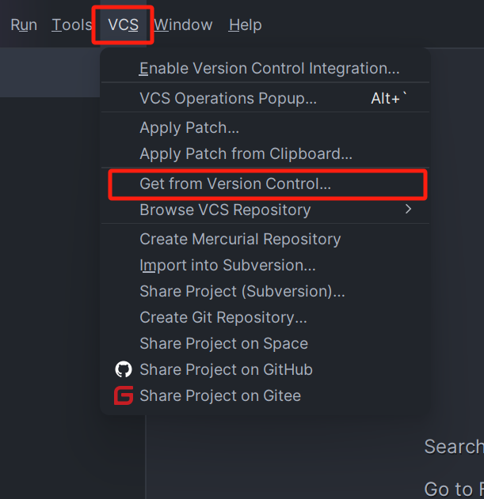
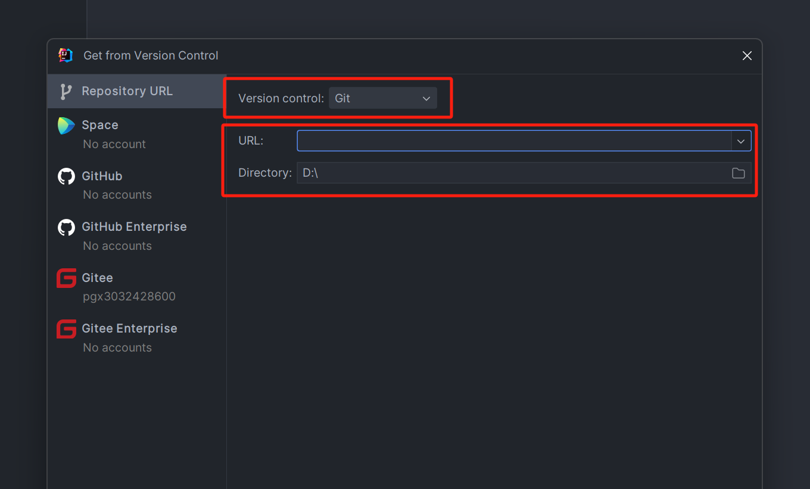
- 如果上方显示的是Git选项
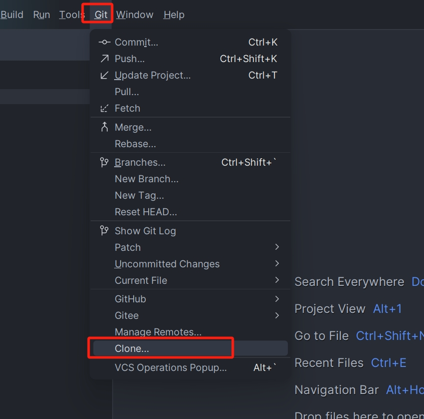
添加文件到暂存区
- 在项目里每添加一个文件，IDEA就会询问我们是否将文件添加到Git，选择Add将文件添加添加进Git暂存区
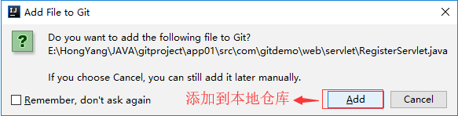
- 如果选中了Cancel，可以通过另一种方式添加到Git暂存区，右键点击项目
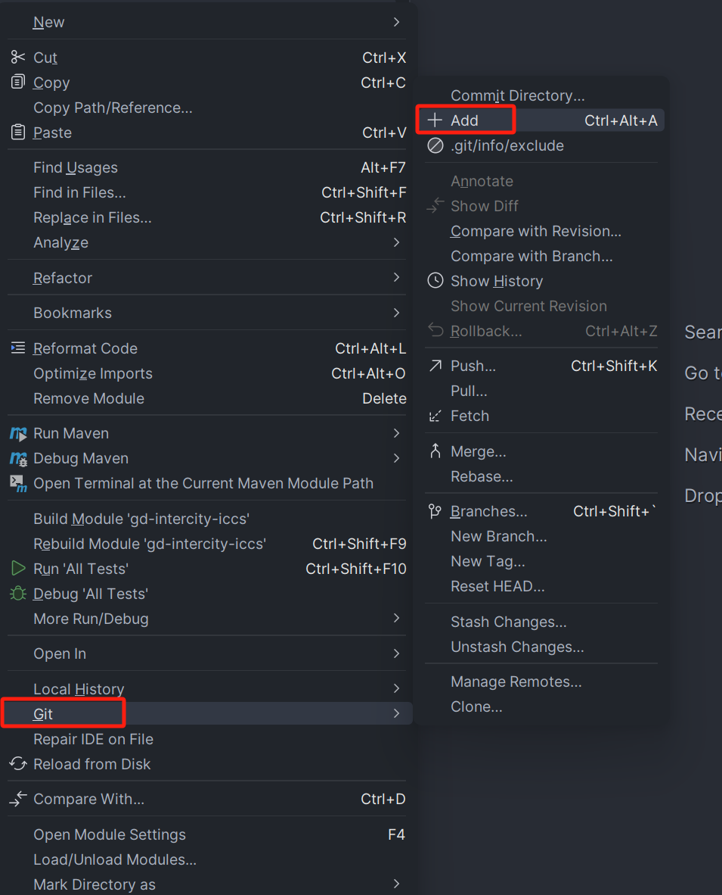
提交到本地仓库
选中Commit后代码会提交到本地仓库

推送到远程仓库
选中Push后代码会提交到远程仓库
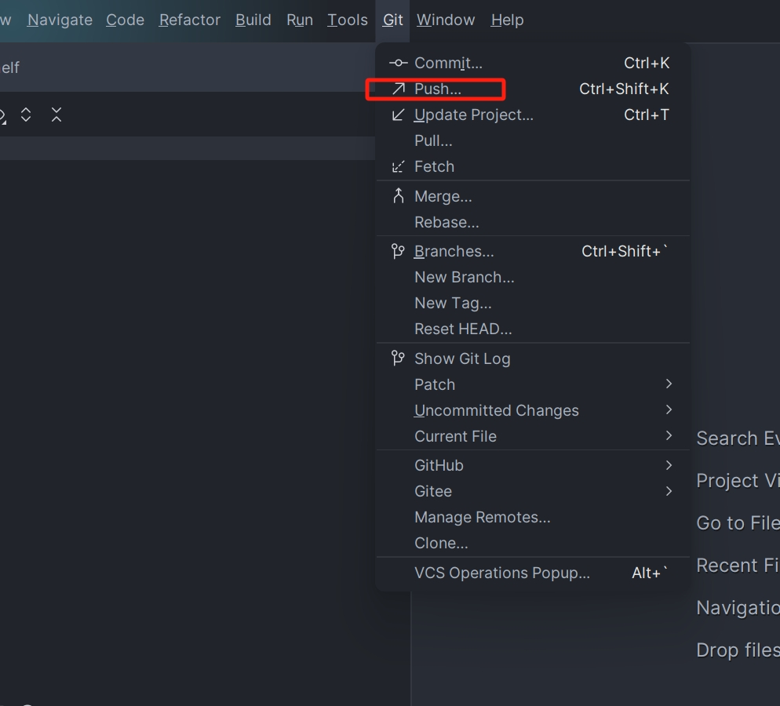
选择分支
通过Branches可以选择对应的分支进行开发
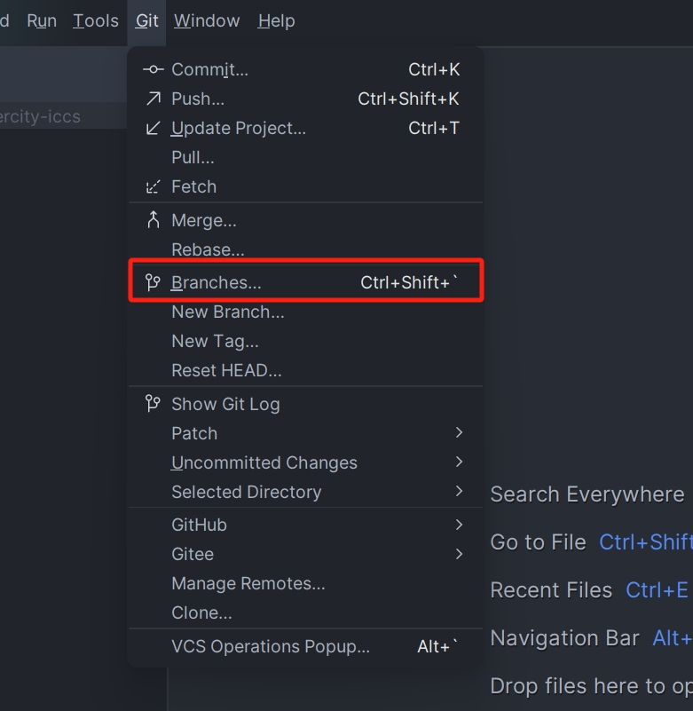
创建新分支
通过New Branch可以在某个分支的基础上创建一个新的分支
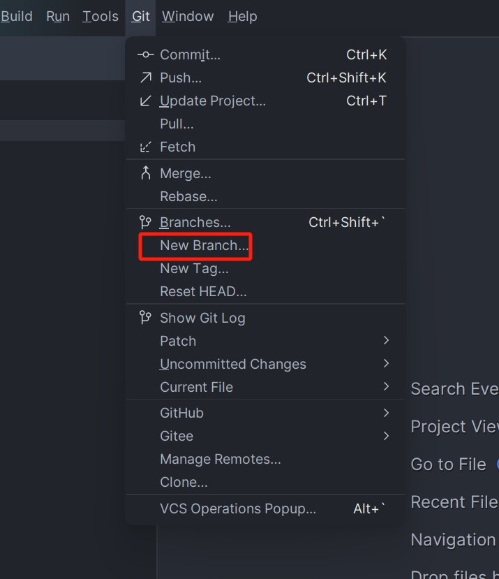
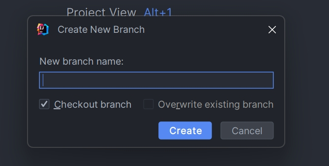
分支合并
通过Merge选择某个分支的内容合并到当前分支上
 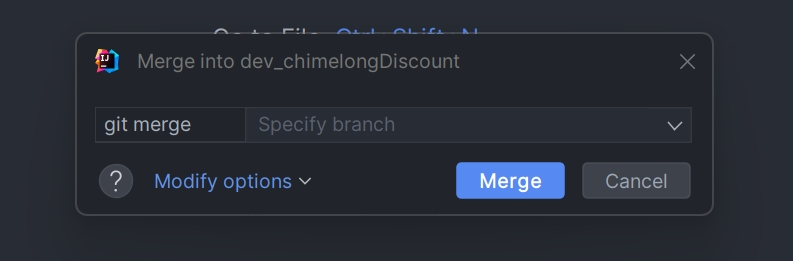
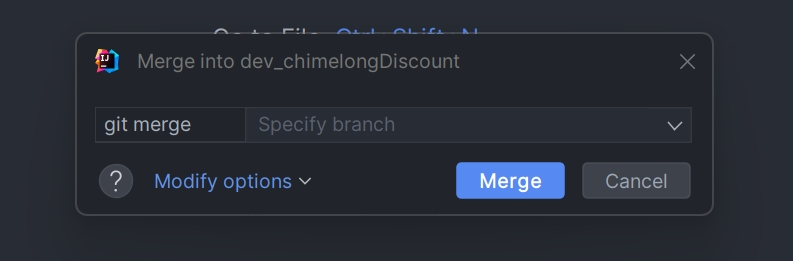
提交历史记录查看
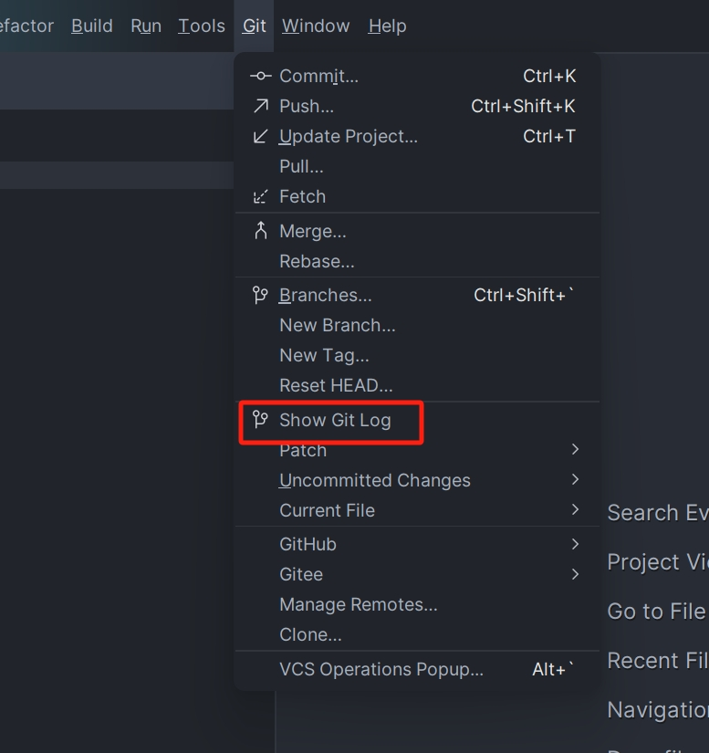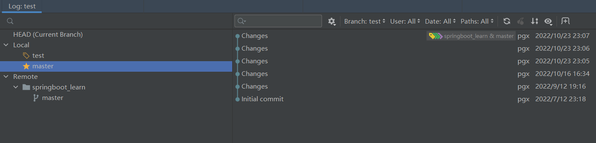
对比不同版本
- Compare with Revision：当前文件与该文件各次提交的版本做比较
- Compare with Branch：当前文件与其他分支上该文件的版本进行比较
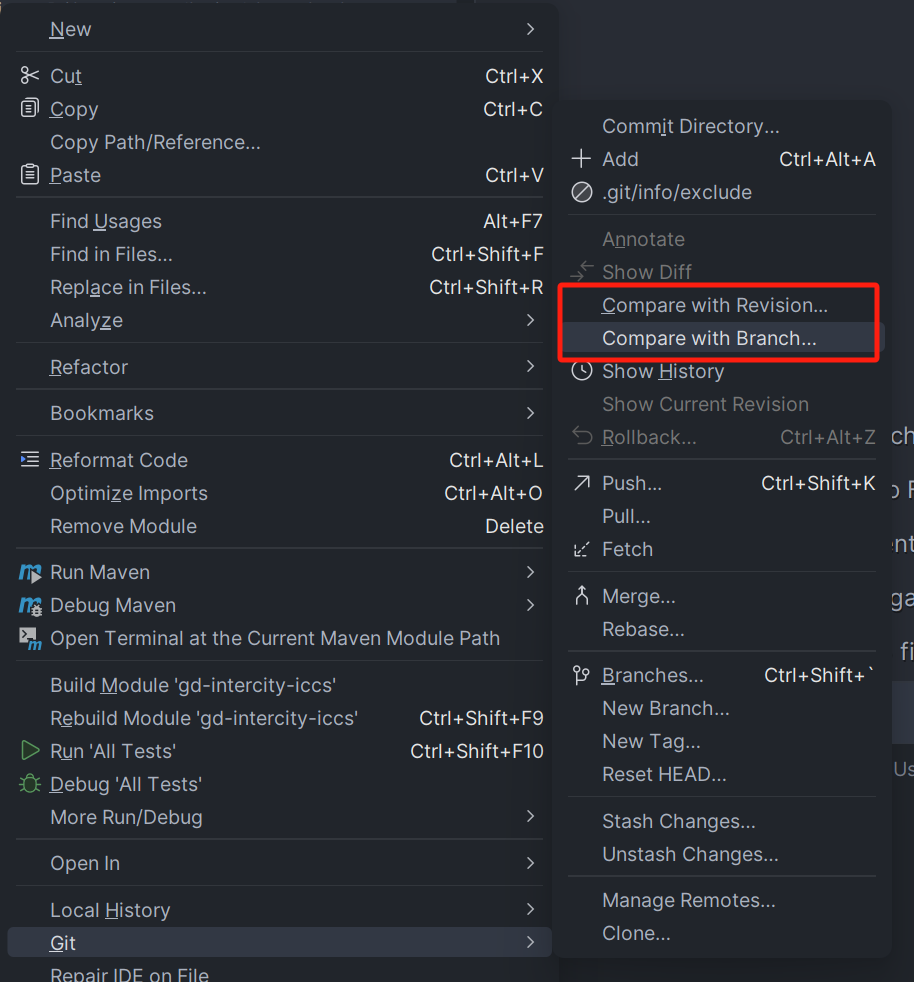
代码搁置
当我们临时需要开发某个功能时，此时的代码修改后可能还不想进行提交，可以先搁置代码，当完成开发后再回来释放代码，继续之前的代码修改
- shelve changes（代码搁置和恢复）
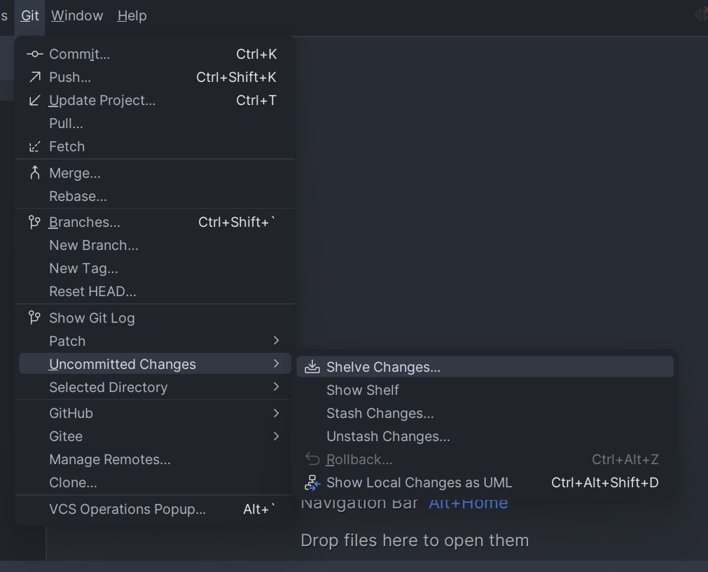
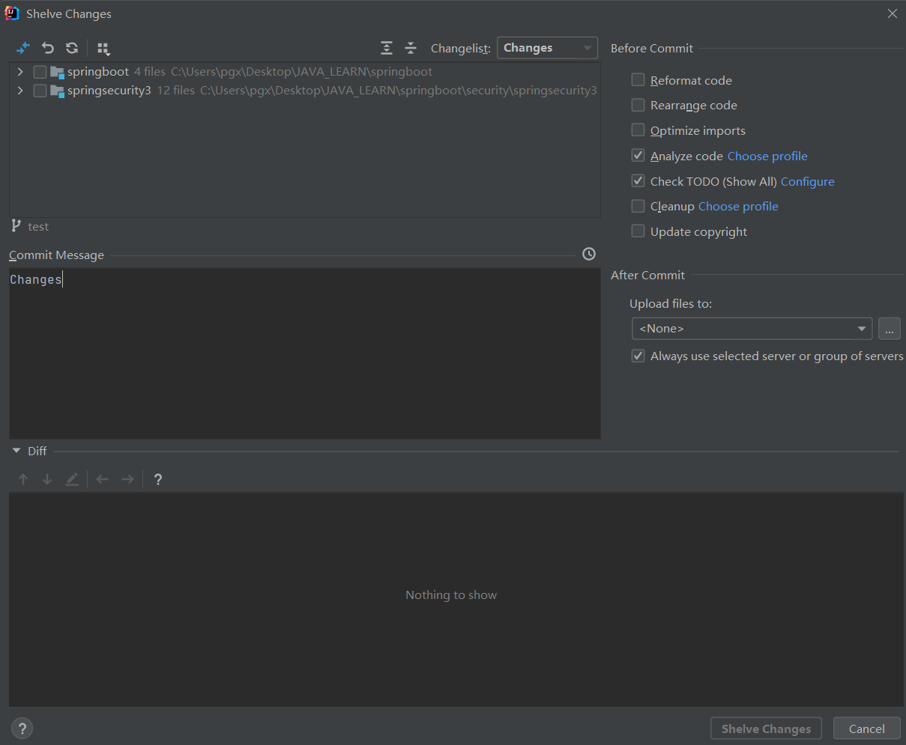


- stash changes（搁置代码）和unstash changes（恢复代码）
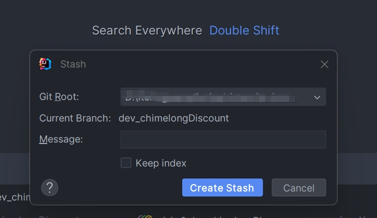
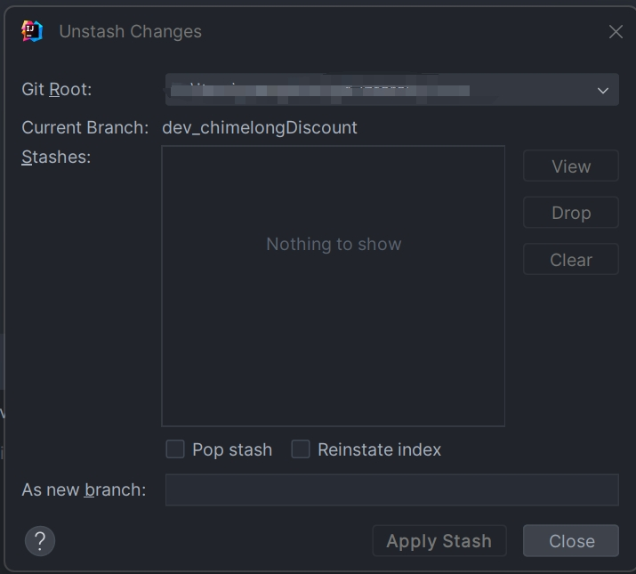
回退版本
当我们想要回退某个分支的版本时，可以通过右键点击提交历史记录，选择reset current branch to here

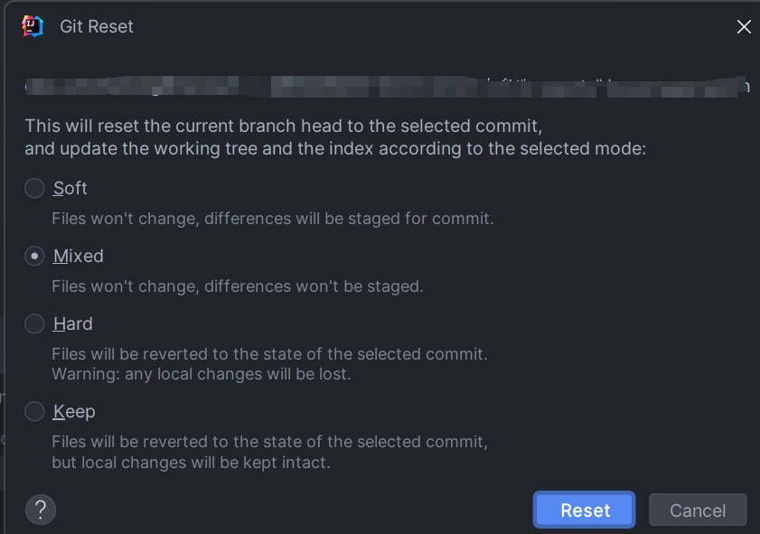
- hard：回滚后，本地代码就是你回退版本的代码（彻底回退，所有改动的内容都不见了，慎用）
- 移动本地库HEAD指针
- 重置暂存区
- 重置工作区
- soft：回滚后，仅仅是把本地库的指针移动了，暂存区和本地的代码是没有做任何的改变，而你上次改动已提交committed到本地库的代码显示是绿色即未提交的状态
- 移动本地库HEAD指针
- mixed：回滚后，不仅移动了本地库的指针，同时暂存区的东西也没了，即上次添加到暂存区的文件没了
- 移动本地库HEAD指针
- 重置暂存区
- keep：回滚后，本地代码就是你回退版本的代码，而暂存区是没有做任何改变的
- 移动本地库HEAD指针
- 暂存区不变
- 重置工作区
撤销某个commit
当我们想要撤销某个commit时，可以通过右键点击提交历史记录，选择revert commit
合并某个commit
当我们想要合并某个分支的某个提交内容时，可以cherry-pick选定某个commit或某个commit的部分文件
本博客所有文章除特别声明外，均采用 CC BY-NC-SA 4.0 许可协议。转载请注明来源 爱编程的小生！
相关推荐

2024-12-05
Git（1-基本概念）
Git是一种分布式版本控制系统，广泛用于软件开发和团队协作。它可以高效管理项目代码的版本变更，支持分支和合并操作，方便多人协作。Git具备离线操作能力，确保历史记录完整性和安全性，常与平台如GitHub搭配使用，为代码管理和协作开发提供强大支持。
2024-12-14
Git（2-常用命令）
Git是一种常用的版本控制工具，常用命令包括git init（初始化仓库）、git clone（克隆仓库）、git add（添加文件到暂存区）、git commit（提交更改）、git push（推送到远程仓库）、git pull（拉取更新）、git branch（分支管理）和git merge（合并分支），帮助开发者高效管理代码版本。
评论